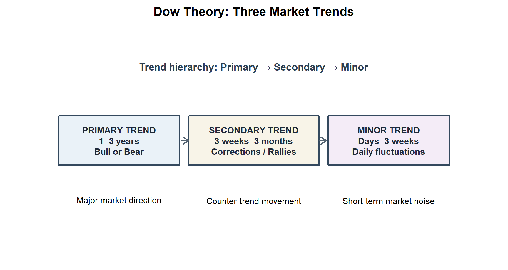
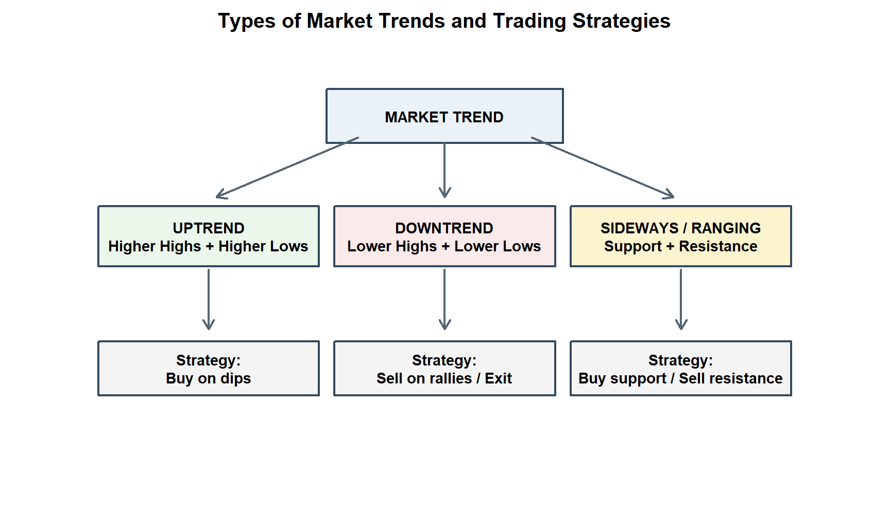
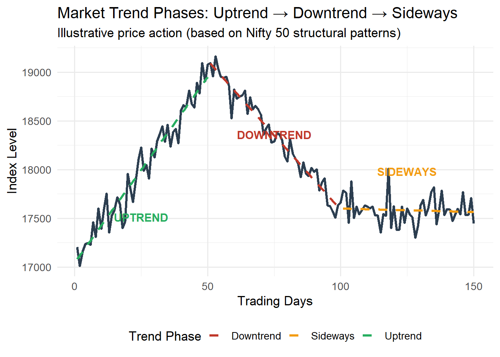
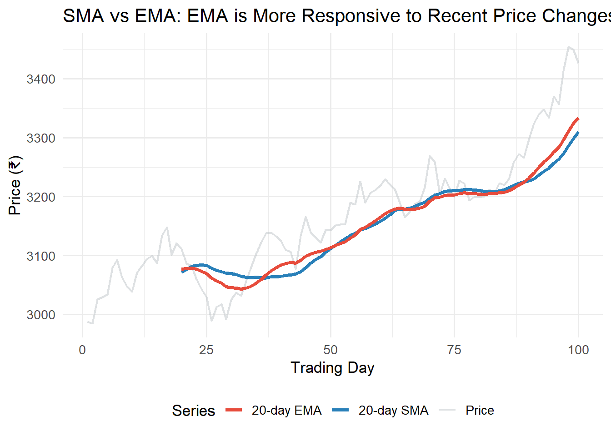
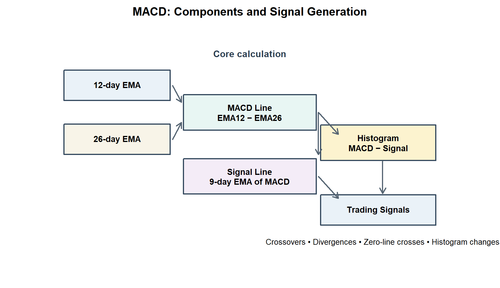
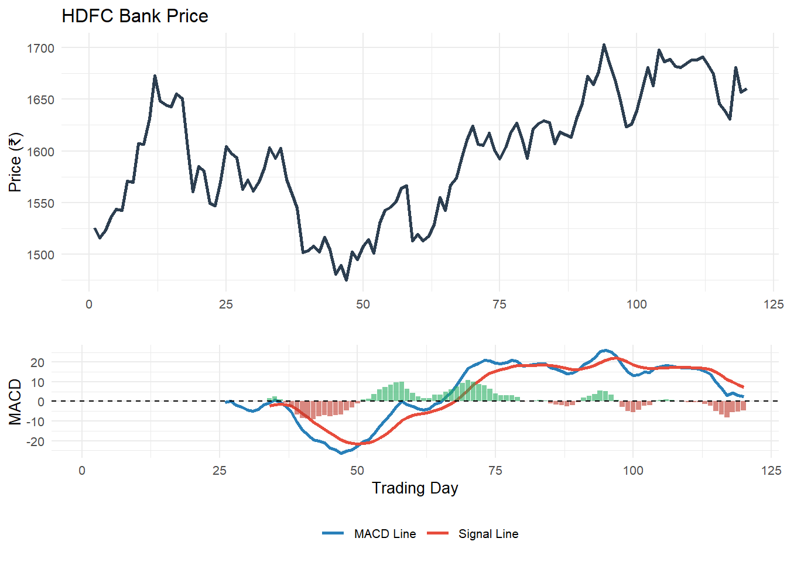
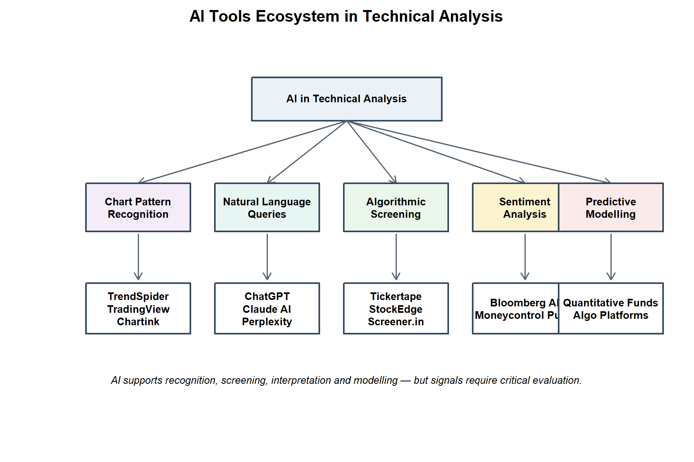

Chapter 4 Technical Analysis
Learning Objectives
After completing this unit, students will be able to:
- Explain the philosophical foundations and assumptions of technical analysis
- Describe the Dow Theory and its six tenets with Indian market illustrations
- Identify and interpret different types of price trends and chart patterns
- Calculate and interpret Simple Moving Average (SMA) and Exponential Moving Average (EMA)
- Compute and explain MACD, Pivot Points, and VWAP with worked examples
- Evaluate modern AI-powered technical analysis tools used in Indian markets
- Critically assess the strengths and limitations of technical analysis
4.1 Introduction to Technical Analysis
4.1.1 Meaning and Philosophy
Technical Analysis is the study of historical price and volume data of a security to forecast its future price movements. Unlike fundamental analysis, which examines the intrinsic value of a company, technical analysis is concerned exclusively with:
- What has happened to price and volume in the past
- When to buy or sell based on chart patterns and indicators
- How market psychology drives price action
The discipline is rooted in three core assumptions:
Assumption 1: Market discounts everything All known information — fundamental, economic, psychological — is already reflected in the current market price. Hence, price is the only variable that needs analysis.
Assumption 2: Prices move in trends Once a trend is established, it is more likely to continue than to reverse. The role of the technician is to identify trends early and trade in their direction.
Assumption 3: History repeats itself Market participants respond to similar situations in similar ways. Chart patterns that worked in the past tend to work again because human emotions — fear and greed — do not change.
4.1.2 Technical vs. Fundamental Analysis
| Dimension | Technical Analysis | Fundamental Analysis |
|---|---|---|
| Focus | Price and volume | Intrinsic value of business |
| Data Used | Historical market data (OHLCV) | Financial statements, economy data |
| Time Horizon | Short to medium term (hours to months) | Long term (1–5+ years) |
| Primary Tool | Charts and indicators | Ratio analysis and valuation models |
| Objective | Timing the market — WHEN to buy/sell | Stock selection — WHAT to buy |
| Best Suited For | Traders, speculators, day traders | Investors, fund managers, analysts |
| Core Belief | Market behaviour reflects all information | Market eventually reflects true value |
| Indian Users | Retail traders, F&O participants | Mutual funds, FIIs, HNIs |
Source: Compiled by the author.
4.2 Dow Theory
4.2.1 Origins and Significance
The Dow Theory is the oldest and most respected framework in technical analysis, developed by Charles Henry Dow (co-founder of Dow Jones & Company and The Wall Street Journal) in a series of editorials published between 1900 and 1902. After Dow’s death, his collaborator William Peter Hamilton and later Robert Rhea (1932) formalised the theory.
In India, the Dow Theory remains foundational — the price action of Nifty 50 and Sensex is routinely interpreted through the Dow Theory lens by market analysts on CNBC-TV18, Bloomberg Quint, and Moneycontrol.
4.2.2 The Six Tenets of Dow Theory
Tenet 1: The Averages Discount Everything
The market price of every security reflects all known information — earnings, dividends, geopolitical events, and future expectations. This aligns with the semi-strong form of the Efficient Market Hypothesis (EMH). Investors cannot consistently earn excess returns using publicly available information.
Indian Application: When RBI announces a surprise repo rate cut, Nifty 50 moves immediately — the announcement is “discounted” by the market within minutes. Sensex and Nifty 50 both need to confirm a signal for it to be valid.
Tenet 2: The Market Has Three Trends

Figure 4.1: Figure 4.1: Three Trends in Dow Theory
Figure 4.1: Three Trends in Dow Theory
| Trend | Duration | Description | Indian Example |
|---|---|---|---|
| Primary | 1–3 years | Major bull or bear market | Bull market 2020–2024 (Nifty 11,000 → 26,000) |
| Secondary | 3 weeks – 3 months | Counter-trend correction within primary | Nifty correction Oct 2021 (−12%) within bull market |
| Minor | Days – 3 weeks | Day-to-day fluctuations | Daily ±1% moves on Nifty |
Tenet 3: Primary Trends Have Three Phases
Bull Market Phases: 1. Accumulation Phase — Smart money buys while public sentiment is pessimistic (post COVID lows, March 2020 — Nifty at 7,511) 2. Public Participation Phase — Trend becomes apparent; retail investors enter; volumes rise 3. Excess / Distribution Phase — Euphoria; overvaluation; smart money sells (Nifty all-time highs, mid-2024)
Bear Market Phases: 1. Distribution — Informed investors sell to optimistic public 2. Panic Phase — Rapid selling; prices collapse; margin calls triggered 3. Discouragement Phase — Prices stagnate; investors give up; economy recovers silently
Tenet 4: The Averages Must Confirm Each Other
In the original US context, both the Dow Jones Industrial Average (DJIA) and the Dow Jones Transportation Average (DJTA) must confirm a trend signal.
In India, this is applied as: Nifty 50 and Nifty Bank (or Sensex and BSE Bankex) must move in the same direction to confirm a breakout or breakdown.
Tenet 5: Volume Must Confirm the Trend
- In a bull trend: Volume should expand on up-moves and contract on corrections
- In a bear trend: Volume should expand on down-moves and contract on rallies
- Divergence between price and volume is a warning signal of trend exhaustion
Tenet 6: A Trend is Assumed to Continue Until a Definitive Reversal Occurs
This is the most actionable tenet — don’t fight the trend. A bull market should be assumed to continue until the market makes a lower low and lower high (in price), signalling reversal.
“The trend is your friend — until the bend at the end.” — Technical Analysis maxim
4.3 Trend Analysis
4.3.1 Meaning of Trend
A trend is the general direction of a market or a security’s price over time. Trends are the foundation of technical trading — “trade with the trend, not against it.”

Figure 4.2: Figure 4.2: Types of Market Trends and Trading Strategies
Figure 4.2: Types of Market Trends and Trading Strategies
4.3.2 Uptrend
An uptrend is characterised by a series of Higher Highs (HH) and Higher Lows (HL). Each rally takes prices to a new peak, and each correction finds support above the previous low.
Characteristics: - Buying pressure exceeds selling pressure - Volume typically higher on up-days - 50-day SMA above 200-day SMA (Golden Cross) - RSI typically between 50–80
Indian Example: Nifty 50 from April 2020 (7,511) to September 2024 (26,000+) — a classic primary uptrend with multiple secondary corrections of 8–15%.
4.3.3 Downtrend
A downtrend is characterised by Lower Highs (LH) and Lower Lows (LL). Each rally fails to reach the previous high, and each decline goes below the previous low.
Indian Example: Nifty IT Index (NIFTY IT) from January 2022 to June 2022 — fell from 39,000 to 24,500 (−37%) as US Fed rate hikes triggered fear of US recession and reduced discretionary IT spending.
4.3.4 Sideways / Ranging Trend
In a sideways trend, prices oscillate between a defined support (floor) and resistance (ceiling) level without making new highs or lows.
Support: Price level where demand is strong enough to stop decline (e.g., Nifty 50’s repeated support at 17,000–17,500 in 2022–23). Resistance: Price level where supply is strong enough to stop advance (e.g., Nifty’s resistance at 18,600 for several months in 2022).
set.seed(42)
n <- 150
t <- 1:n
# Create synthetic trend data
uptrend <- 17000 + 40 * t[1:50] + rnorm(50, 0, 120)
downtrend <- max(uptrend) - 30 * (1:50) + rnorm(50, 0, 100)
sideways <- mean(c(downtrend[45:50])) + rnorm(50, 0, 150)
price_series <- c(uptrend, downtrend, sideways)
time_series <- 1:150
trend_df <- data.frame(
Day = time_series,
Price = price_series,
Phase = c(rep("Uptrend", 50), rep("Downtrend", 50), rep("Sideways", 50))
)
ggplot(trend_df, aes(x = Day, y = Price, color = Phase)) +
geom_line(linewidth = 1.1, aes(group = 1), color = "#2c3e50") +
geom_smooth(aes(group = Phase, color = Phase), method = "lm", se = FALSE,
linetype = "dashed", linewidth = 1.2) +
scale_color_manual(values = c("Uptrend" = "#27ae60",
"Downtrend" = "#c0392b",
"Sideways" = "#f39c12")) +
annotate("text", x = 25, y = min(price_series) + 500, label = "UPTREND",
color = "#27ae60", fontface = "bold", size = 4) +
annotate("text", x = 75, y = max(price_series) - 800, label = "DOWNTREND",
color = "#c0392b", fontface = "bold", size = 4) +
annotate("text", x = 125, y = mean(sideways) + 400, label = "SIDEWAYS",
color = "#f39c12", fontface = "bold", size = 4) +
labs(title = "Market Trend Phases: Uptrend → Downtrend → Sideways",
subtitle = "Illustrative price action (based on Nifty 50 structural patterns)",
x = "Trading Days", y = "Index Level", color = "Trend Phase") +
theme_minimal(base_size = 13) +
theme(legend.position = "bottom")
Figure 4.3: Figure 4.3: Simulated Nifty 50 Trend Illustration (Uptrend, Downtrend, Sideways)
4.4 Moving Averages
4.4.1 Meaning and Purpose
A Moving Average (MA) is a trend-following indicator that smooths out price fluctuations by calculating the average price over a specified number of periods. It filters out the “noise” in daily price movements, making the underlying trend more visible.
Moving averages are lagging indicators — they confirm a trend after it has started, not before.
4.4.2 Simple Moving Average (SMA)
\[\boxed{SMA_n = \frac{P_1 + P_2 + P_3 + \cdots + P_n}{n}}\]
Where \(P_t\) is the closing price at time \(t\) and \(n\) is the number of periods.
Example 4.1: Calculate 5-day SMA for Reliance Industries:
# Reliance Industries closing prices (hypothetical)
prices_ril <- c(2980, 3010, 2995, 3030, 3050, 3025, 3060, 3080, 3070, 3100)
days <- 1:10
# 5-day SMA
sma_5 <- as.numeric(stats::filter(prices_ril, rep(1/5, 5), sides = 1))
# 10-day SMA (only available from day 10)
sma_10 <- mean(prices_ril)
sma_df <- data.frame(
Day = days,
Price = prices_ril,
SMA_5 = round(sma_5, 2)
)
cat("5-Day Simple Moving Average — Reliance Industries:\n")## 5-Day Simple Moving Average — Reliance Industries:## Day Price SMA_5
## 1 1 2980 NA
## 2 2 3010 NA
## 3 3 2995 NA
## 4 4 3030 NA
## 5 5 3050 3013
## 6 6 3025 3022
## 7 7 3060 3032
## 8 8 3080 3049
## 9 9 3070 3057
## 10 10 3100 3067##
## 10-Day SMA: 3040SMA Crossover Strategy:
The most widely used SMA-based trading signal: - Golden Cross: 50-day SMA crosses above 200-day SMA → Bullish signal (Buy) - Death Cross: 50-day SMA crosses below 200-day SMA → Bearish signal (Sell)
Indian Example: Nifty 50 generated a Golden Cross in June 2020 (post-COVID recovery), confirming the bull market that ran until 2024.
4.4.3 Exponential Moving Average (EMA)
The EMA gives greater weight to recent prices, making it more responsive to new information than SMA.
\[\boxed{EMA_t = \left(\frac{2}{n+1}\right) \times (P_t - EMA_{t-1}) + EMA_{t-1}}\]
The multiplier \(k = \frac{2}{n+1}\) is called the smoothing factor.
For a 12-day EMA: \(k = \frac{2}{12+1} = 0.1538\) For a 26-day EMA: \(k = \frac{2}{26+1} = 0.0741\)
set.seed(123)
n_days <- 100
price_data <- 3000 + cumsum(rnorm(n_days, 2, 25))
# Calculate SMA (20-day)
sma_20 <- as.numeric(stats::filter(price_data, rep(1/20, 20), sides = 1))
# Calculate EMA (20-day)
k <- 2 / (20 + 1)
ema_20 <- numeric(n_days)
ema_20[1] <- price_data[1]
for (i in 2:n_days) {
ema_20[i] <- k * price_data[i] + (1 - k) * ema_20[i-1]
}
ema_20[1:19] <- NA
plot_df <- data.frame(
Day = 1:n_days,
Price = price_data,
SMA_20 = as.numeric(sma_20),
EMA_20 = ema_20
)
ggplot(plot_df, aes(x = Day)) +
geom_line(aes(y = Price, color = "Price"), alpha = 0.5, linewidth = 0.8) +
geom_line(aes(y = SMA_20, color = "20-day SMA"), linewidth = 1.3, na.rm = TRUE) +
geom_line(aes(y = EMA_20, color = "20-day EMA"), linewidth = 1.3, na.rm = TRUE) +
scale_color_manual(values = c("Price" = "#bdc3c7",
"20-day SMA" = "#2980b9",
"20-day EMA" = "#e74c3c")) +
labs(title = "SMA vs EMA: EMA is More Responsive to Recent Price Changes",
x = "Trading Day", y = "Price (₹)", color = "Series") +
theme_minimal(base_size = 13) +
theme(legend.position = "bottom")
Figure 4.4: Figure 4.4: SMA vs EMA Comparison on Simulated Stock Data
SMA vs EMA — Key Differences:
| Feature | SMA | EMA |
|---|---|---|
| Weighting | Equal weight to all periods | Higher weight to recent prices |
| Responsiveness | Slower to react | Faster to react |
| Lag | Higher lag | Lower lag |
| False signals | Fewer | More |
| Best use | Identifying major trend | Entry/exit timing |
| Preferred periods | 50-day, 200-day | 12-day, 26-day (for MACD) |
4.5 MACD — Moving Average Convergence and Divergence
4.5.1 Meaning and Components
MACD is one of the most popular momentum indicators in technical analysis, developed by Gerald Appel in the late 1970s. It measures the relationship between two EMAs, revealing changes in momentum, direction, and strength of a trend.
Three Components of MACD:
\[\boxed{MACD \text{ Line} = EMA_{12} - EMA_{26}}\] \[\boxed{\text{Signal Line} = EMA_9 \text{ of MACD Line}}\] \[\boxed{\text{MACD Histogram} = \text{MACD Line} - \text{Signal Line}}\]

Figure 4.5: Figure 4.5: MACD Components and Signal Generation
Figure 4.5: MACD Components and Signal Generation
4.5.2 MACD Calculation — Worked Example
Example 4.2: Calculate MACD for HDFC Bank with 20 days of closing price data.
set.seed(42)
n <- 120
# Simulate HDFC Bank price data
hdfc_prices <- 1500 + cumsum(rnorm(n, 0.8, 18))
# EMA function
calc_ema <- function(prices, period) {
k <- 2 / (period + 1)
ema <- numeric(length(prices))
ema[period] <- mean(prices[1:period]) # Seed with SMA
for (i in (period+1):length(prices)) {
ema[i] <- k * prices[i] + (1-k) * ema[i-1]
}
ema[ema == 0] <- NA
return(ema)
}
ema12 <- calc_ema(hdfc_prices, 12)
ema26 <- calc_ema(hdfc_prices, 26)
macd_line <- ema12 - ema26
macd_line[is.na(ema26)] <- NA
# Signal line: 9-day EMA of MACD line
signal_line <- calc_ema(na.omit(macd_line), 9)
full_signal <- c(rep(NA, sum(is.na(macd_line))), signal_line)
if(length(full_signal) < n) full_signal <- c(rep(NA, n - length(full_signal)), full_signal)
histogram <- macd_line - full_signal
macd_df <- data.frame(
Day = 1:n,
Price = hdfc_prices,
MACD = macd_line,
Signal = full_signal,
Histogram = histogram
)
# Plot 1: Price
p1 <- ggplot(macd_df, aes(x = Day, y = Price)) +
geom_line(color = "#2c3e50", linewidth = 1) +
labs(title = "HDFC Bank Price", y = "Price (₹)", x = "") +
theme_minimal(base_size = 10)
# Plot 2: MACD
p2 <- ggplot(macd_df, aes(x = Day)) +
geom_line(aes(y = MACD, color = "MACD Line"), linewidth = 1, na.rm = TRUE) +
geom_line(aes(y = Signal, color = "Signal Line"), linewidth = 1, na.rm = TRUE) +
geom_col(aes(y = Histogram,
fill = ifelse(Histogram > 0, "Positive", "Negative")),
alpha = 0.6, na.rm = TRUE) +
scale_color_manual(values = c("MACD Line" = "#2980b9", "Signal Line" = "#e74c3c")) +
scale_fill_manual(values = c("Positive" = "#27ae60", "Negative" = "#c0392b"),
guide = "none") +
geom_hline(yintercept = 0, linetype = "dashed") +
labs(y = "MACD", x = "Trading Day", color = "") +
theme_minimal(base_size = 10) +
theme(legend.position = "bottom")
gridExtra::grid.arrange(p1, p2, ncol = 1, heights = c(1.5, 1))
Figure 4.6: Figure 4.6: MACD Indicator — HDFC Bank (Simulated)
4.5.3 MACD Trading Signals
| Signal | Description | Action |
|---|---|---|
| Bullish Crossover | MACD Line crosses above Signal Line | BUY |
| Bearish Crossover | MACD Line crosses below Signal Line | SELL |
| Bullish Divergence | Price makes new low; MACD makes higher low | BUY (reversal warning) |
| Bearish Divergence | Price makes new high; MACD makes lower high | SELL (reversal warning) |
| Zero Line Cross Up | MACD Line crosses above zero | Trend turned bullish |
| Zero Line Cross Down | MACD Line crosses below zero | Trend turned bearish |
| Histogram Expanding | Bars growing; momentum strengthening | Continue in trend direction |
| Histogram Shrinking | Bars declining; momentum weakening | Prepare for reversal |
Limitation of MACD: MACD is a lagging indicator and performs best in trending markets. In sideways (ranging) markets, it generates multiple false signals. Indian day traders often combine MACD with RSI and volume analysis to filter signals.
4.6 Pivot Points
4.6.1 Meaning
Pivot Points are pre-calculated support and resistance levels derived from the previous day’s High (H), Low (L), and Close (C) prices. They are the most widely used tool by intraday traders on NSE and BSE.
4.6.2 Calculation
\[\boxed{Pivot Point (PP) = \frac{High + Low + Close}{3}}\]
\[\text{Resistance 1 (R1)} = (2 \times PP) - Low\] \[\text{Resistance 2 (R2)} = PP + (High - Low)\] \[\text{Resistance 3 (R3)} = High + 2 \times (PP - Low)\] \[\text{Support 1 (S1)} = (2 \times PP) - High\] \[\text{Support 2 (S2)} = PP - (High - Low)\] \[\text{Support 3 (S3)} = Low - 2 \times (High - PP)\]
4.6.3 Worked Example
Example 4.3: Calculate Pivot Points for Nifty 50 given: Previous Day H = 24,850, L = 24,520, C = 24,710.
H <- 24850; L <- 24520; C <- 24710
PP <- (H + L + C) / 3
R1 <- (2 * PP) - L
R2 <- PP + (H - L)
R3 <- H + 2 * (PP - L)
S1 <- (2 * PP) - H
S2 <- PP - (H - L)
S3 <- L - 2 * (H - PP)
cat("=== Nifty 50 Pivot Points ===\n")## === Nifty 50 Pivot Points ===## Resistance 3 (R3): 25196.67## Resistance 2 (R2): 25023.33## Resistance 1 (R1): 24866.67## Pivot Point (PP): 24693.33 ← Key level## Support 1 (S1): 24536.67## Support 2 (S2): 24363.33## Support 3 (S3): 24206.67How Traders Use Pivot Points:
- Price above PP → Bullish bias for the day; buy near PP, target R1/R2
- Price below PP → Bearish bias; sell near PP, target S1/S2
- Price at R1/R2/R3 → Watch for reversal or breakout
- Price at S1/S2/S3 → Watch for bounce or breakdown
- Pivot Point = first target for both bulls and bears
Nifty 50 Pivot Points are published every morning by brokers like Zerodha, Upstox, and Sharekhan, and displayed on platforms like Chartink and TradingView before market open at 9:15 AM IST.
4.7 Volume Weighted Average Price (VWAP)
4.7.1 Meaning and Importance
VWAP is the average price at which a security has traded throughout the day, weighted by volume. It gives more significance to price levels where large volumes were traded, making it a superior measure of intraday fair value compared to a simple average.
\[\boxed{VWAP = \frac{\sum_{t=1}^{n} (P_t \times V_t)}{\sum_{t=1}^{n} V_t}}\]
Where \(P_t\) = Typical price at time \(t\) = \(\frac{High_t + Low_t + Close_t}{3}\) and \(V_t\) = Volume at time \(t\).
4.7.2 VWAP Calculation — Worked Example
Example 4.4: Calculate VWAP for Tata Motors (NSE) for first 6 intraday intervals.
# Tata Motors intraday data
interval <- c("9:15", "9:30", "10:00", "10:30", "11:00", "11:30")
high <- c(940, 945, 948, 942, 951, 955)
low <- c(935, 938, 941, 936, 944, 948)
close <- c(938, 942, 944, 939, 948, 952)
volume <- c(125000, 98000, 112000, 87000, 135000, 102000)
typical_price <- (high + low + close) / 3
pv <- typical_price * volume
cumulative_pv <- cumsum(pv)
cumulative_vol <- cumsum(volume)
vwap <- cumulative_pv / cumulative_vol
vwap_df <- data.frame(
Interval = interval,
High = high, Low = low, Close = close,
Typical_Price = round(typical_price, 2),
Volume = format(volume, big.mark = ","),
Cumulative_PV = format(round(cumulative_pv), big.mark = ","),
VWAP = round(vwap, 2)
)
kable(vwap_df,
caption = "Table 4.2: VWAP Calculation — Tata Motors Intraday",
col.names = c("Interval", "High", "Low", "Close", "Typical Price",
"Volume", "Cumulative PV", "VWAP"),
booktabs = TRUE) |>
kable_styling(bootstrap_options = c("striped", "hover"), font_size = 11, full_width = TRUE) |>
row_spec(0, bold = TRUE, color = "white", background = "#2c3e50") |>
row_spec(nrow(vwap_df), bold = TRUE, background = "#eaf4fb")| Interval | High | Low | Close | Typical Price | Volume | Cumulative PV | VWAP |
|---|---|---|---|---|---|---|---|
| 9:15 | 940 | 935 | 938 | 937.67 | 125,000 | 117,208,333 | 937.67 |
| 9:30 | 945 | 938 | 942 | 941.67 | 98,000 | 209,491,667 | 939.42 |
| 10:00 | 948 | 941 | 944 | 944.33 | 112,000 | 315,257,000 | 941.07 |
| 10:30 | 942 | 936 | 939 | 939.00 | 87,000 | 396,950,000 | 940.64 |
| 11:00 | 951 | 944 | 948 | 947.67 | 135,000 | 524,885,000 | 942.34 |
| 11:30 | 955 | 948 | 952 | 951.67 | 102,000 | 621,955,000 | 943.79 |
Source: Illustrative data for pedagogical purposes.
4.7.3 VWAP Trading Strategies
Institutional Use: - Large fund managers (FIIs, DIIs) use VWAP as a benchmark: buying below VWAP is considered a “good fill”; buying above VWAP is expensive. NSE SEBI disclosures show institutional block deals are often executed at VWAP.
Retail Trading Signals: - Price crosses above VWAP → Intraday bullish; buy with stop below VWAP - Price crosses below VWAP → Intraday bearish; sell/short with stop above VWAP - Price hugs VWAP → No clear trend; avoid directional trades
VWAP Band Strategy: Some traders add standard deviation bands around VWAP (±1σ, ±2σ) — similar to Bollinger Bands — to identify overbought/oversold intraday conditions.
4.8 AI Tools in Technical Analysis
4.8.1 The AI Revolution in Technical Analysis
Artificial Intelligence has transformed technical analysis from a manual charting exercise into a data-driven, algorithmic discipline. Indian retail traders and institutional investors are increasingly integrating AI tools into their analysis workflow.

Figure 4.7: Figure 4.7: AI Tools Ecosystem in Technical Analysis
Figure 4.7: AI Tools Ecosystem in Technical Analysis
4.8.2 Platform-by-Platform Analysis
A. TradingView (with AI Features)
TradingView is the world’s most popular charting platform with 50+ million users globally, including over 5 million Indian users (2024). Key AI features:
- Smart Patterns: Automatically detects 100+ chart patterns (Head & Shoulders, Double Top, Cup & Handle) on any timeframe
- Pine Script: Proprietary programming language for custom AI-powered indicators
- AI Chart Analysis (Beta, 2024): Natural language description of the current chart structure — e.g., “Nifty Bank is in a bullish flag consolidation above the 20-day EMA with declining volume — potential breakout target 53,000”
- Screener: Multi-condition AI screener with real-time NSE/BSE data
Strengths: Professional charting, community indicators, real-time global data Limitations: Premium plans needed for advanced features; Indian data sometimes delayed on free plan
B. TrendSpider
TrendSpider is an AI-first charting platform that automates technical analysis: - Automated Trendline Detection: Draws all significant trendlines without human bias - Multi-timeframe Analysis (MTFA): Simultaneously analyses weekly, daily, hourly charts and flags convergence zones - Raindrop Charts: AI-powered volume-at-price visualisation (unique to TrendSpider) - Strategy Tester: Backtesting of AI-generated signals
Strengths: Truly automated pattern recognition; saves hours of manual charting Limitations: US-centric; Indian NSE/BSE data integration limited; premium pricing
C. Tickertape (India-specific)
Tickertape is an SEBI-registered RA platform built specifically for Indian investors: - Stock Screener: 200+ filters combining fundamental + technical criteria - Smallcase Integration: Theme-based portfolio creation - Scorecard: AI-generated overall score for each stock (Momentum, Quality, Value) - Portfolio Analyser: Real-time tracking with XIRR calculation
Strengths: 100% Indian data; integrates FA + TA; free tier available Limitations: Advanced charting less sophisticated than TradingView
D. Screener.in
The most popular free fundamental + basic technical screening platform for Indian investors: - 10-year financial data for all NSE/BSE companies - Custom query builder (e.g., “Return on equity > 20% AND Debt to equity < 0.5 AND 52-week high breakout”) - Export to Excel/Google Sheets for further analysis
Example Query on Screener.in:
Return on equity > 20
AND Debt to equity < 0.5
AND Sales growth 5Years > 15
AND Price to Earning < 30
AND Current price > 200 Day moving averageE. StockEdge
StockEdge (by Elearnmarkets) provides club-based research with AI-powered scans: - 150+ pre-built technical scans (Bullish Engulfing, Morning Star, MACD Crossover) - EOD (End of Day) and intraday scans on all NSE stocks - Edge Reports: AI-curated research on sectors and stocks - Study Module: In-app learning resources
Strengths: Best-in-class scanning for Indian markets; club features for idea sharing Limitations: Primarily EOD; charting less advanced
F. Chartink
Chartink is a free, real-time NSE/BSE screener popular among Indian traders: - Creates custom intraday and EOD scans - MACD, RSI, Bollinger Bands, Supertrend alerts - Candlestick pattern recognition (Hammer, Doji, Engulfing) - Free for basic features — widely used by retail traders
Example Chartink Scan:
[Latest] AND [MACD(26,12,9) > MACD Signal(26,12,9)]
AND [Daily Volume > Weekly MA Volume(20)]
AND [Daily Close > Daily SMA(50)]G. ChatGPT in Technical Analysis
ChatGPT (OpenAI) can be used for: - Explaining chart patterns and indicators in plain language - Writing Pine Script for custom TradingView indicators - Backtesting code in Python/R for technical strategies - Interpreting MACD, RSI, pivot point levels when given data - Generating trading plan templates and risk management frameworks
Example ChatGPT Prompt for Technical Analysis: > “I’m looking at Reliance Industries. The stock has crossed above its 200-day SMA, MACD just gave a bullish crossover on the daily chart, and volumes are 2x the 20-day average. The pivot point for today is ₹3,020 with R1 at ₹3,050. Write a structured intraday trading plan with entry, stop-loss, and two targets.”
H. Claude AI (Anthropic) in Technical Analysis
Claude excels at: - Structured analysis of multiple indicators simultaneously - Writing well-commented R/Python code for technical analysis (MACD, SMA, Bollinger Bands) - Explaining complex concepts (Elliott Wave, Ichimoku Cloud) in student-friendly language - Document analysis: Paste a broker’s technical research report; Claude summarises key signals
I. Bloomberg Terminal / Bloomberg AI
Institutional-grade platform used by FIIs, mutual funds, and hedge funds: - BTST (Buy Today Sell Tomorrow) alerts based on AI signal aggregation - News Sentiment Analysis: Real-time scoring of news impact on stock price - IB (Implied Volatility) analysis for F&O traders - DAPI: Bloomberg’s Data API with AI-enhanced analytics
Access: Terminal costs approximately $25,000/year — accessed by institutional investors, not retail.
4.8.3 Comparison Matrix of AI Technical Analysis Tools
| Tool | Indian Data | Real-Time | AI Features | Cost (approx.) | Best For |
|---|---|---|---|---|---|
| TradingView | Yes | Yes (premium) | Moderate | Free/₹2K-5K/mo | Charting |
| TrendSpider | Limited | Yes | High | ~₹3K/mo | Pattern Detection |
| Tickertape | Yes | Yes | Moderate | Free/₹500/mo | India Screener |
| Screener.in | Yes | Yes | Low | Free/₹2K/yr | FA+TA India |
| StockEdge | Yes | Limited | Moderate | Free/₹1K/mo | Scans + Education |
| Chartink | Yes | Yes | Low | Free | Free Scans |
| ChatGPT | No | No | High | Free/₹1.5K/mo | Code + Explanation |
| Claude AI | No | No | High | Free/₹1.5K/mo | Analysis + Code |
| Bloomberg | Yes | Yes | Very High | ~₹1.5L/yr | Institutional |
Source: Compiled by the author from platform documentation and user reviews (2024).
4.8.4 Strengths and Limitations of AI in Technical Analysis
Strengths: 1. Speed — AI screens 2,000+ NSE stocks in seconds for technical setups 2. Objectivity — Eliminates emotional bias in pattern identification 3. Backtesting — AI can test strategies over 10+ years of historical data instantly 4. Multi-timeframe — Simultaneously analyses weekly, daily, and hourly charts 5. 24/7 Monitoring — Alerts via SMS/app when conditions are met
Limitations: 1. Lagging — Most AI tools use lagging indicators (MA-based); cannot predict reversals 2. Overfitting — AI strategies that perform well in backtests may fail in live markets 3. Black Box — Some AI systems don’t explain the reasoning behind signals 4. Data Quality — Poor data quality (corporate actions, splits) can mislead AI models 5. Market Regime Changes — AI trained on bull market data fails in bear markets 6. Regulatory Risk — SEBI has issued guidelines on algorithmic trading; compliance needed
SEBI Alert (2022–2024): SEBI has warned investors against relying on unregistered “finfluencers” and AI-based trading apps that promise guaranteed returns using technical signals. Always use SEBI-registered Research Analysts for investment advice. Platforms providing buy/sell recommendations must be registered as RAs with SEBI under the Investment Adviser Regulations, 2013.
Research Corner 4.1: Machine Learning in Technical Analysis
Key Academic Finding: Brock, Lakonishok, and LeBaron (1992) — the landmark study in the Journal of Finance — found that simple moving average and trading range breakout strategies generated statistically significant returns on the Dow Jones Industrial Average from 1897 to 1986. However, subsequent studies in efficient markets have debated whether these profits survive transaction costs.
India-Specific Research: A study by Patel et al. (2015) (Expert Systems with Applications) compared ANN, SVM, Random Forest, and Naive Bayes for predicting Nifty 50 movements — finding Random Forest most accurate at 89.1% on training data, though live performance is typically lower.
Emerging Research Areas: 1. Transformer models (like GPT architecture) for time-series price prediction 2. Reinforcement learning for optimal execution (VWAP/TWAP strategies) 3. Alternative data (satellite imagery, social media sentiment, web scraping) for alpha generation 4. Explainable AI (XAI) for regulatory compliance in algorithmic trading
Research Gap: Systematic study of the profitability of AI-based technical strategies in Indian small-cap and mid-cap stocks (which are less efficient than large-cap) represents a promising PhD research area.
4.9 Summary
Technical analysis is the study of historical price and volume data to forecast future price movements, based on three assumptions: market discounts everything, prices move in trends, and history repeats.
Dow Theory — the foundation of technical analysis — identifies three trend types (primary, secondary, minor), three phases of bull/bear markets, and requires both averages to confirm signals.
Uptrend = Higher Highs + Higher Lows; Downtrend = Lower Highs + Lower Lows; Sideways = Price oscillates between support and resistance.
SMA gives equal weight to all periods; EMA gives more weight to recent prices and reacts faster to price changes.
MACD = EMA(12) − EMA(26). The Signal Line is EMA(9) of MACD. Crossovers and divergences are the primary signals.
Pivot Points are pre-calculated support and resistance levels based on the previous day’s H, L, C — the most popular intraday tool for NSE/BSE traders.
VWAP is the volume-weighted average price — the benchmark for institutional execution and a key intraday direction indicator for retail traders.
AI tools — TradingView, TrendSpider, Tickertape, Screener.in, Chartink, StockEdge, ChatGPT, Claude — are transforming technical analysis, but come with limitations of overfitting, data quality, and regulatory compliance.
4.10 Key Terms
- Technical Analysis — Study of price/volume history to forecast future price
- Dow Theory — Foundational framework of technical analysis by Charles Dow
- Primary Trend — Major market direction lasting 1–3 years
- Secondary Trend — Counter-trend correction within primary (3 weeks–3 months)
- Accumulation Phase — First phase of bull market; smart money buys
- Distribution Phase — Final phase of bull market; smart money sells
- Golden Cross — 50-day SMA crosses above 200-day SMA; bullish
- Death Cross — 50-day SMA crosses below 200-day SMA; bearish
- SMA — Simple Moving Average; equal-weighted price average
- EMA — Exponential Moving Average; recent prices weighted more
- Smoothing Factor (k) — EMA weighting: 2/(n+1)
- MACD Line — Difference between 12-day and 26-day EMA
- Signal Line — 9-day EMA of MACD Line
- MACD Histogram — Difference between MACD Line and Signal Line
- Bullish Divergence — Price makes new low; MACD does not; reversal signal
- Pivot Point (PP) — Average of previous day’s H, L, C
- Resistance — Price ceiling where supply dominates
- Support — Price floor where demand dominates
- VWAP — Volume Weighted Average Price; intraday fair value
- Typical Price — (High + Low + Close) / 3; used in VWAP
- Momentum Indicator — Measures speed/rate of price change (MACD, RSI)
- Lagging Indicator — Based on past prices; confirms existing trends
- Backtesting — Testing a strategy against historical data
- Overfitting — Strategy over-optimised on historical data; fails in live markets
- Pine Script — TradingView’s indicator programming language
- Algo Trading — Automated, computer-executed trading strategies
- SEBI RA — SEBI-registered Research Analyst; licensed for investment recommendations
- Intraday Trading — Buy and sell within the same trading session
- Supertrend — Popular trend-following indicator on Indian platforms
- Elliott Wave — Advanced pattern theory of 5-wave impulse + 3-wave correction cycles
4.11 MCQs — Unit IV (Selected)
1. Which of the following is a lagging indicator? - (A) Moving Average ← Correct (B) RSI (C) Volume (D) Open Interest
Answer: A. Moving averages are based on past prices; they confirm trends rather than predict them.
2. The Dow Theory requires that for a valid breakout signal, the move must be confirmed by: - (A) Volume only (B) Both market averages ← Correct (C) One average only (D) RSI
Answer: B. Dow Theory states that both averages (e.g., Nifty 50 and Nifty Bank) must confirm each other for a valid signal.
3. The smoothing factor (k) for a 12-day EMA is: - (A) 0.100 (B) 0.154 ← Correct (C) 0.200 (D) 0.083
Answer: B. k = 2/(12+1) = 2/13 ≈ 0.1538
4. MACD Line is calculated as: - (A) EMA(26) − EMA(12) (B) EMA(12) − EMA(26) ← Correct (C) SMA(12) − SMA(26) (D) EMA(12) + EMA(26)
5. VWAP is most useful for: - (A) Long-term investors (B) Fundamental analysts (C) Intraday traders ← Correct (D) Mutual fund managers
6. Pivot Point is calculated using: - (A) Previous week’s data (B) Previous day’s High, Low, Close ← Correct (C) Current day’s Open (D) 5-day average
7. In a Golden Cross: - (A) 200-day SMA crosses above 50-day SMA (B) 50-day SMA crosses above 200-day SMA ← Correct - (C) MACD crosses above zero (D) Volume crosses above average
8. Which Indian platform provides real-time FREE NSE scanning with MACD and RSI filters? - (A) Bloomberg (B) TrendSpider (C) Chartink ← Correct (D) SEBI Portal
4.12 Numerical Problems — Unit IV
Problem 4.1: Calculate the 5-day EMA for TCS given closing prices: 4100, 4150, 4180, 4160, 4200, 4220, 4210 (start EMA from SMA of first 5 days).
prices_tcs <- c(4100, 4150, 4180, 4160, 4200, 4220, 4210)
period <- 5
k <- 2 / (period + 1)
ema_vals <- numeric(length(prices_tcs))
ema_vals[period] <- mean(prices_tcs[1:period]) # Seed: SMA of first 5
for (i in (period+1):length(prices_tcs)) {
ema_vals[i] <- k * prices_tcs[i] + (1-k) * ema_vals[i-1]
}
ema_vals[ema_vals == 0] <- NA
result_df <- data.frame(Day = 1:7, Price = prices_tcs,
EMA_5 = round(ema_vals, 2))
print(result_df)## Day Price EMA_5
## 1 1 4100 NA
## 2 2 4150 NA
## 3 3 4180 NA
## 4 4 4160 NA
## 5 5 4200 4158.00
## 6 6 4220 4178.67
## 7 7 4210 4189.11## Smoothing factor k = 0.3333Problem 4.2: Calculate Pivot Points for Nifty Bank given Previous H = 52,400, L = 51,800, C = 52,150.
H <- 52400; L <- 51800; C <- 52150
PP <- (H+L+C)/3
cat("PP:", round(PP,0), "\nR1:", round(2*PP-L,0),
"\nR2:", round(PP+(H-L),0), "\nS1:", round(2*PP-H,0),
"\nS2:", round(PP-(H-L),0))## PP: 52117
## R1: 52433
## R2: 52717
## S1: 51833
## S2: 51517End of Unit IV